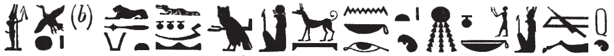

Column A (152-158)
Esna 152
- Location: Facade, Column A, Upper Bandeau
- Date: Domitian
-
Hieroglyphic Text
- Bibliography: None
Esna 152 A
Anṯr wr ḫnty Iwny.t
dỉ ṯȝw n nṯr.w rmṯ
snsn fnḏ nb
ʿnḫ=sn ỉm=f
qȝ-ḥr-ỉȝ.t=f qȝ.tw
ỉmỉ.tw sḫ.t=f
ẖnm-Rʿ nb Pr-nṯr
A The great god within Iunyt,
who gives air to gods and men,
so that every nose breathes,
and they all live through him.
High-upon-his-Standard is elevated
within his field:
Khnum-Re, lord of Per-netjer
Esna 152 B
Bnṯr šps
ḫpr ẖr-ḥȝ.t
ỉmn rn=f r ms.w=f
B The august god,
who came about in the beginning,
who hid his name from his children.
Ptḥ ỉr wnn.t
bs=f ḏs=f
wʿ ỉr sw m ḥḥ.w
qmȝ nty nb ḫpr=f
ẖnm-Rʿ nb Iwny.t
Ptah, who created what exists,
who emerged by himself,
the sole one who made himself into millions,
who created all that is when he came about:
Khnum-Re Lord of Iunyt.
Esna 153
- Location: Facade, Column A
- Date: Domitian
-
Hieroglyphic Text
- Bibliography: None
Cartouches of Domitian and Heka the Child, before figures of Khnum, Nekhbet, and Wadjet.
Esna 154
- Location: Column A, middle bandeau
- Date: Domitian
-
Hieroglyphic Text
- Bibliography: None
Esna 154 A
bȝ ʿȝ-šfy.t
wr pḥty m-m nṯr.w
nb mȝʿ.t
ʿnḫ=f ỉm=s
ḫwỉ nỉw.t=f r ḏw nb
wṯz tȝ r-ḏr=f r ḫry.t
ẖnmw-Rʿ nb sḫ.t
The Ba, great of prestige,
great of strength among the gods,
Lord of Maat,
from whom he lives,
who protects his city from all evil,
who keeps the whole earth from destruction:
Khnum-Re Lord of the Field.
Esna 154 B
bȝ ỉr bȝ.w
qmȝ pȝty.w
m kȝr=sn
sštȝ=f sw
m ỉr qdỉ ḥr nḥp
ṯz mw nn=f wrḏ
ẖnmw-Rʿ nb tȝ-sn.t
The Ba who made the Bas,
who created the primeval gods
in their shrines,
who made himself remote
as he who builds upon the potter’s wheel,
who binds together semen without tiring:
Khnum-Re Lord of Esna.
Esna 155
- Location: Column A
- Date: Domitian
-
Hieroglyphic Text
- Bibliography: Sauneron 1959, p. 62 (excerpts); see also Tempeltexte 2.0
1wḫȝ pn
nty (ḥr) dwn m bȝḥ=k
ẖnmw-Rʿ nb sḫ.t
ḥqȝ n mnỉ.w
ṯwf pw
swtwt=k r mȝȝ=f
ṯz=k […]
[…] m-ẖnw ssw(?) [wʿ?]
[…] mȝnw
m nb(.t)-ḥry.w
spr=f Km.t
ỉṯ=k nmt.t=f
rwỉ=k r-dbn=f
m sʿr(.t)-nb=s
2ȝḫ-bỉ.t ẖr mrr.t=k
ṯwf rwḏ.tw n ḥr=k
sḏm sḏm.w
wšb n=k wšb.w
ʿm nr.w-ỉḥ.w ỉb.w[=sn]
[…] ḥw.t-[…]
1 This papyriform columned hall
which rises upon before you,
Khnum-Re Lord of the Field,
Ruler of the Herdsmen;
It is a reed marsh,
which you travel to see.
You lift up […]
[…] within a [single?] day.393
[…] Manu
in (the hour) Lady of those Above.394
You reach Egypt,
and you seize its course,
and move all around it,
in (the hour) She who Raises her Lord.395
2 Chemmis bears what you love,
a reed marsh flourishing before you.
The sḏm-bulls listen (sḏm),
and the wšb-bulls respond (wšb) to you;
the cattle ranchers stay quiet
[…] the Temple of […]396
[…]
bʿḥ.w […] nb
m [ỉrṯ.t] sšp
wnm=k [swr]=k
wʿb.tw ỉḥ.w ngȝ.w(?)
3mỉ ʿšȝ=sn
sȝḥ.n=k tȝ
šȝʿ.n=k
ỉn.n=k pr-ẖnmw m nḏm-ỉb
ʿq=k ḥw.t-bȝ.w
m mk.t-nb=s
ršw ỉmy.w pr-nṯr
n ptr=k
[…]
all […] are flooded
with radiant milk:
may you eat and [drink].
The cows and bulls(?)397 are pure
3 as they are numerous!
You finally arrived at the land
where you had started;
you reach Per-Khnum in happiness,
and you enter Temple of the Bas
in (the hour) She who Protects her Lord:398
those within Per-netjer rejoice
from seeing you.
nṯr ʿȝ nb sḫ.t
hr=f m […]
ʿq[=f … m] ȝw.t-ỉb
ršw ỉb=f
m mȝȝ ỉfd.w=f
nt-ʿ=f mỉ mỉt.t=f
ʿȝ ỉbṯ.wt
ḫnty zbt.wt
4wr sm.w
ʿšȝ npry
msḫ.wt=f ṯḥn.tw
ẖr ḥrr.w nb.w
pẖr(.w) m mn.w
ẖr pȝy.w ḫnn.w
mẖr.t ẖr šbn.w
m šzp(.w) nb.w n nṯr
The great god, Lord of the Field,
he delights from […]
[he] enters […in] happiness,
his heart delights
from seeing its four corners,
its rites are just like at its peer.399
Great of fowling traps,400
prominent of blossoms,
4 great of plants,
numerous of grain.401
Its fields402 sparkle
bearing all types of flowers.
It is surrounded by pools
hosting birds and fish.
ḥsȝ.t štȝ.t
šd(.t) Rʿ m […]
ḥsȝ.t mỉt.t
ḥr wḥm-ḫʿ
wrry.t
5mnʿ.t ḫy=s
sḫȝ.t-ḥr
ḥqȝ ns.t=s
ȝḫy.t wr.t
šdnw.t mw.t-nṯr
ȝḫy.t mỉt.t
m wḥm-ḫpr
kȝ.w m P
ỉd.wt m Dp
ḫwy.wt n psḏ.t
ỉmn.w
n nṯr.w nb.w tȝ
mnty.w n nṯr.w p.t
kȝ.w 6ḥr sṯ.t (r) ỉd.wt
m ỉb=sn
sʿr 7r dmḏy.t=s
ḫṯy.wt ḥr dr
nỉ spr rḫt
8bẖ zȝ
m-snỉ r ỉt=f
ḏȝm.w 9m mȝ.wt
nỉ rḫ ṯnw=sn
10(ḥr) wḥm šn r mnḫ
Hesat the mysterious,
who nurses Re in […]
Hesat, likewise,
repeating life.
The Great cow,405
5 who feeds her child;
Sekhat-Hor,
the ruler of her throne.
The great Akhet cow,
she of Shedenu, mother of god;
the Akhet cow, likewise,
repeating forms.
The bulls in Pe,
the cows in Dep,
the ḫwy.t-cows of the Ennead,
the ỉmn-bulls
of all the gods of earth;
the mnty-bulls of the gods of heaven.
The bulls 6 ejaculate (for) the cows406
in their ‘hearts’,
going up 7 at her appointed time;
the ḫṯy.t-cows deliver,
one could not even make a list,407
8 so a son is born
resembling his father.
The generations 9 are renewed,
their number cannot be known,
10 repeating the cycle excellently.
Esna 156
- Location: Column A
- Date: Domitian
-
Hieroglyphic Text
- Bibliography: Sauneron 1959, pp. 62-63 (excerpts); see also Tempeltexte 2.0
11ỉȝw n=k
ỉn nṯr.w tȝ
ḥnmm.t ḥm.t-rȝ
m ksw 12n bȝw=k
nṯr.w m ḫ(ȝ)ḫ
r wṯz-nfrw=k
nṯr.yt m sns 13n ḥr=k
tȝ.wy ḫȝs.wt (ḥr) snỉ-tȝ
n šfy.t=k
ȝḫy.t 14wbg.tw m np(r)y
m ḥr=k nfr
15ḫsbḏ šd(.t)
ww ṯḥn.tw
mn.w 16ẖr šmȝ.w
šȝ.w nb wȝḏwȝḏ(.w) r ḫft-ḥr=k
prḫ=sn m ḥr=k nfr
ṯḥn kȝ=k
wnf ḥr=k
ȝw-ỉb=k
m s.t wnn=k
11 Praise be to you,
by the gods of earth.
The sunfolk, etc.
are bent down 12 before your power.
The gods hurry
to carry your perfection;
goddesses praise 13 to your face.
All lands kiss the earth
for your prestige.
The ȝḫ-field blossoms with grain
for your beautiful face,
15 the flooded land is lapis lazuli,
the agricultural district scintillates,
the basins 16 carry petals,
all plants are verdant before you,
they open up in your beautiful face.
Your Ka sparkles,
your face rejoices,
your heart delights
in the place you are.
ʿḏʿḏ n=k ỉḥ.wt
ḥr mẖr.t=sn
ḫntš n=k ȝpd.w
ḫnt sš=sn
nhm n=k ḏw.w
thm n=k ʿ.wt=sn
17ȝb n=k htt.w
ỉmy.w Kns.t
ḥyt.yw n=k m htt
hn n=k ḏȝḏȝ.t ʿȝ.t
tp.t-Nwn
sḥtp tw=k Nwn wr
ḥnʿ ỉmy.w-ḫt=f
ʿ.wy=sn ʿn(.w) m ḥnf
ḥm-nṯr=k pr=k ỉm=s
ḥr dwȝ=k rʿ-nb
The cows ululate for you
in their stable,408
the birds jubilate for you
within their nests.
The mountains rejoice for you,
their wild goats bleat(?)409 for you.
17 The baboons within Kenset
dance for you;
the apes chatter for you.
The Great Council over Nun
perform the hn-dance for you.
Great Nun appeases you
along with his followers:
their arms are turned back in praise.410
Your priest, from whom you emerge(?),
worships you every day.
rwḏ nb ẖr s.t-ḥr=k
ntk ṯȝw n ʿnḫ
n nṯr.w rmṯ
snsn fnḏ nb
ʿnḫ=sn ỉm=k
18nb kȝ.w
ʿšȝ ḏfȝw
nb np(r)y
ʿšȝ Rnn.t
mḥn.t=f m-ḫt=f
r grg tȝ m wḏ=f
(ḥr) spẖr tȝ-mrỉ
m rn=f
r ḫw(.t) tȝ.wy
m wr-šfy.t
wbn m Nwn
All plants are under your control.
You are the breath of life
for gods and people,
all noses breath,
and they live through you.
18 Lord of food,
numerous of provisions,
lord of grain,
plentiful of Renenutets.
His uraeus is with him,
to found the earth through his decree,
encircling the Beloved Land (Egypt)
in his name,
in order to protect the two lands,
as the one Great of Prestige,
who arose from Nun.
nfr.wy ḥr=k
dm šw.ty=k r p.t
dwȝ tw nṯr.w ȝḫty.w
ỉw n=k ỉmy.w p.t m ḥʿʿ
n snḏ n šfy.t=k
dwȝ n=k ỉn nṯr.w dwȝ.t
19ỉmnty.w m ỉȝw n ḥr=k
nṯr.w pȝwty.w
ʿ.wy=sn m dwȝ kȝ=k
sḥtp tw=k bȝ.w ỉmnty.w
sḏr n=k sʿḥ.w
ḥr ẖ.t=sn
ʿḥʿ n=k sḏr.w
ḥr tmȝ.t=sn
How beautiful is your face!
Your double plumes pierce the sky.411
The gods of the Akhet praise you,
those in heaven come to you in joy
out of fear for your prestige.
You are praised by the gods of the Duat,
19 the Westerners worship to your face,
the primeval gods,
their arms are worshipping your Ka.412
The western Bas appease you:
the mummies lie down for you
upon their bellies;
the recumbent ones stand up for you
upon their mats.413
sḥḏ.n=k dwȝ.t
n dwȝty.w
ʿq=k r=sn m ṯȝw […]
[…] nwn ẖr=sn
ntk ỉt bnr
n ỉmy.w ḥw.t-bȝw
Nb.t-ww(?) pw m 20mȝʿ.t
štȝ.t zp-snw
ỉmn zp-snw
nỉ rḫ=s ỉn rmṯ nb.w
nỉ ḫnd=s ʿ.wt
nỉ ʿr=s s.t
wḏȝ tȝ r-ḏr=f
r ḫrwy.t
You illumined the Duat
for the Datians,
you enter towards them as air […]
[…] Nun beneath them.
You are the sweet father
to those within Temple of the Bas,414
that means Nebtu(?)415 is Maat.
Very mysterious,
very hidden:
it cannot be known by any people,
livestock may not tread upon it,
a woman may not approach it,
so that the entire land might be safe416
from a calamity.417
ḥȝp.tw ẖȝ.t=k
ḏsr.tw s.t=k
hyn n ḥm=k
snḏm=k m-ḫnt=f
nỉ ḥr=k r tȝ-sn.t
mry ỉb=k
s.t zbỉ-sš.w
n kȝ=k
gm=k ḫnty 21ʿȝ wr
ʿpr(.w) m wḫȝ
dwn(.w) m-ḥzỉ ḥm=k
mỉ ṯwf swtwt=k r mȝȝ=f
ỉn.n=k Bȝq.t m […] zp snw
m grḥ wʿ
mỉt.t=f
r mỉt.t nty ỉm=f
r nty m-ḫnt=f
ẖnm.t=sn bʿḥ(.w)
ẖr rm.w ȝpd.w
mḥs nb ʿpr(.w)
m kȝ.w ỉḥ.wt
m sšp nb n nṯr
Your corpse is hidden,
your place is kept sacred.
It is a dwelling418 for your Majesty,
in which you reside.
You do not stray for Esna,
which your heart loves,
the place of ‘roaming the marshes’
for your Ka.
You find the 21 very great pronaos,
equipped with papyriform columns,
extending to meet your Majesty,
like a papyrus thicket you travel to behold.419
You reached Egypt in […] a second time,
in a single night.420
Its likeness
is like the replica in it,
like that which is within it.421
Their basins are overflowing
with fish and fowl;
all pastures(?)422 are equipped
with bulls and cows,
in all forms of a god.423
22šb.wy n sḥḏ-wr
zȝ.w n ỉtn-m-hrw=f
hb.w n Bȝbȝ
bhȝ.w n Ptḥ
ḥby.w n šw tfn.t
nty.w n N.t
šms.wy [n …]
[…] n wtṯ
btȝy.w n ḫnty tȝ-nn.t
szp.w n sḫt-šzp=f
sȝḥ.w n Nḥb-kȝ.w
wr.w 23n Ptḥ-Irỉ-tȝ
šsṯy.t n ḥqȝs
nfr.t-ỉmȝ n Mr.t nb.t ḥz.w
ptḫy.w n ḥr ȝḫ-bỉ.t
ḫbsy.t n nṯr[.w…]
[…]
22 The šbwy-bull for Sehedj-wer,
zȝ-bulls for the Aten in his day,
hb-bulls for Bebon,
bhȝ-bulls for Ptah,
the ḥby-bull for Shu and Tefnut,
nty.t-cows for Neith,
šms-cows [for …]
[…] for the Procreator,
btȝy-bulls for Foremost of Tjenenet,
šzp-bulls for He who Weaves his Light,
sȝḥ-bulls for Nehebkau,
wr-bulls 23 for Ptah-Irita,
the sšṯy.t-cow for Heqas,
the Good Charmer for Meret, Lady of Songs,
ptḫy-bulls for Horus of Chemmis,
the ḫbsy.t-cow for the god[s…]
[…]
dsy.t n dwȝ-mw.t=f
ḫw.w n Imn-Rʿ
rʿy n Itm(?)
ỉd.wt n 24ḫf-br.wy
spy n šw
ʿḫy.t n tfn.t
zpy n
pr-m-snw.t
bẖ.w n ṯnn.t
štȝ-ḥn.ty
n Rʿ ḥtp=f
ỉbty.w n […]
[…] ʿšȝ
n Itm nb Iwnw
nfr.w n ḥr šd.t
šzp
n tkȝ n ḥpḥp
ndm-ḫrw 25n Rnn.t
ḫbn-ḫrw n šw
mỉ.w n bȝ.w fdw
bʿḥ.w n Ptḥ nfr-ḥr
sȝḥ.w n Igr.t
kȝ.w n r’-ȝw
[…]
[…n]sw.w n rmn-mw.t=f
(??) n sbk šd.t
The dsy.t-cow for Duamutef,
the ḫw-bulls for Amun-Re,
the ray-bull for Atum(?) […]
cows for 24 The Two Eyes See,
the spy-bull for Shu,
the ʿḫy.t-cow for Tefnut,
the zpy-bull for
He Who comes from Senut,424
the Buchis bulls for Tjenenet,425
the secret-horned bull
for Re as he sets,
the ỉbty-bulls for […]
[…] numerous
for Atum, Lord of Heiopolis,
nfr-bulls for Horus of Shet(?),
the bright-bull
for the Torch of Hephep,
the sweet-voice cow 25 for Renenutet,
the guilty-voice bulls for Shu,426
mỉw-bulls for the Four Bas,
bʿḥ-bulls for Ptah-Neferher,
sȝḥ-bulls for Igeret,
bulls for Tura,
[…]
[…]ns-bulls for Remenmutef,
the (??)-bull427 for Sobek of Shedet.
kȝ.w ỉḥ.w mn(.w) m bȝḥ=k
26ḥnʿ wr.w nw mnỉ.w
m.k (pr-ʿȝ)| r-gs=w
ỉp.n=f ṯnw nt ỉḥ.w=k
zȝ.tw m thỉ bȝk=sn
ỉn=f n=k wr.w nw sȝ.t
wr.w nw mnỉ.w
ỉmy-rȝ.w ḫȝ-tpy.w
dmḏ(.w) […]
[…] mnỉ n kmy.w
bȝḥ-m-msn mnỉ n šbn.w
ḫȝw.t 27mnỉ n wȝḏy
ỉn=f n=k sšmw wsr
mnỉ n sZp.w
ỉn=f n=k ỉdr
mnỉ n ḥbʿy
ỉn=f n=k zȝ-nḏm-ỉb
mnỉ n ḥḏ-wry
[…]
mwnf n dšr.w
The bulls and cows endure before you,
26 with the chiefs of the herdsmen.
Behold, (Pharaoh)| is beside them,
he has tallied the number of your cows.
Beware of interrupting their work!
He brings you the chiefs of the stable,
the chiefs of the herdsmen,
the overseers, the first-thousand,428
united […]
[…] the herdsman of the black bulls,
bȝḥ-m-msn, herdsman of the mixed bulls,
ḫȝw.t, 27 herdsman of the green bull.
He brings you Mighty Shesemu,
herdsman of the bright bulls;
he brings you He of the Herd,
herdsman of the ḥbʿy-bull;
he brings you Sweetheart Son,
herdsman of the great white bull
[…]
protector of the red bulls.
swȝḏ-[bȝ?] m ḥr-ỉb ỉry
28 r-gs nsw.t-bỉty
nb-tȝ.wy
(ȝwṯgrtwr kysrs)|
zȝ-Rʿ nb-ḫʿ.w
(ṯwmtyns nty-ḫwỉ)|
smn=f mdw=k m sš.w
m rnp.wt r-ḥn.ty
dỉ[…]
[…] ʿḥʿ=f
smn=k rnp.wt=f
mtn=k s(w) r-ḥn.ty
swȝḏ-[bȝ?]429 is in their midst,
28 beside the King of Upper and Lower Egypt,
Lord of the Two Lands
(Autokrator Caesar)|
Son of Re, Lord of Appearances
(Domitian Augustus)|
He establishes your words in writing,
for years in the future.
May [you] give […]
[…] his lifetime.
May you establish his years.
May you reward him in perpetuity.
Esna 157
- Location: Column E, Lower Bandeau
- Date: Domitian
-
Hieroglyphic Text
- Bibliography: Recklinghausen 2014, p. 137, n. f (157 B, partial)
Esna 157 A
Aʿnḫ nṯr nfr
dỉ-ʿ m sqd
r ḥw.t-Mw.t
r ỉr(.t) ȝḫ.w n mw.t=f
nb nfrw
(twmtyns ḫwỉ)
A Live the good god,
who sets out on a journey
to the Temple of the Mother
to perform benefactions for his mother.
The lord of goodness,
(Domitian Augustus)
Esna 157 B
NB: Without the aid of parallels, this short text would be one of the most difficult to decipher. The repeated child signs make it clear this is about Heka the Child, and like with Esna 164 B, the epithets and unusual spellings occur in the great, acrophonic litany to Heka on interior columns 6 and 12 (Esna III, 242 and 323)
Bnsw.t-bỉty
zȝ-tȝ nb ḥw.t-nṯr
ḥkȝ wr-ḥkȝw
zȝ Sḫm.t
ʿȝ wr tpy n ẖnmw
B King of Upper and Lower Egypt,
zȝ-tȝ-serpent, Lord of the Temple,430
Heka431, greatest of magic,432
son of Sakhmet,433
the very great, first-born of Khnum.434

Esna 158
- Location: Column A, base
- Date: Domitian
- Hieroglyphic Text
- Bibliography: None
Minor inscriptions.